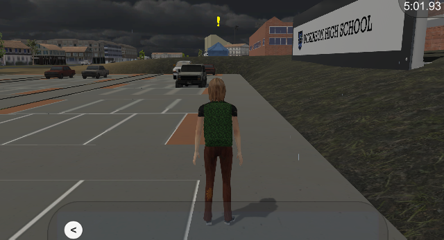
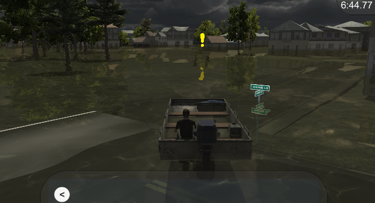

A serious geogame created by the Geographic Information Systems for Disaster Resilience Spatial Thinking Site, an interdisciplinary team funded by a grant from the National Science Foundation. My role was to design the game based on the background research that was conducted, and I helped create the UI and find assets to use as landmarks.
In this game, the player must navigate Dickinson, TX, as it floods during Hurricane Harvey in 2017. Our map was made by importing real-world geographic data from OpenStreetMap through the use of ArcGIS, Mapbox, and CityEngine.
The game's purpose is to teach the player spatial thinking by navigating with only a map, and disaster resilience by introducing the real-world techniques used in preparedness and response.
